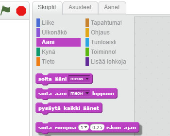

Aloitus
Tänään opit liikuttamaan hahmoa antamalla sille käskyjä. Avaa Scratch, kirjaudu sisään omalla käyttäjätunnuksellasi ja klikkaa "Luo."
Laita kissa tanssimaan
Tehtävän tavoitteena on saada kissa tanssimaan, kun vihreää lippua klikataan. Kissaa ohjataan vetämällä ohjeita sivun oikealla puolella olevaan työtilaan. Tämä tehtävä tehdään yhdessä. Voit tehdä tehtävän myös englanninkielisten ohjeiden avulla. Ne vievät tehtävän pidemmälle kuin tämän sivun ohjeet.
Tee näin:
- Vedä
 ruudun oikealla puolella olevaan työtilaan. Kokeile, mitä tapahtuu, kun liikutat palikkaa.
ruudun oikealla puolella olevaan työtilaan. Kokeile, mitä tapahtuu, kun liikutat palikkaa. - Lisää äänivalikosta rummun ääni.
(1) Liikuta palikkaa niin, että se kiinnittyy liikkumispalikan alapuolelle.



- Vedä toinen samanlainen liikepalikka kiinni rumpupalikkaan ja muuta askelmääräksi -10. Voit muokata palikoiden numeroita klikkaamalla niitä.
(4)

- Lisää toinen rumpupalikka. Valitse tällä kertaa erilainen ääni.
- Etsi ohjausvalikosta Toista 10 kertaa -palikka
(5) ja vedä se koko ohjeen ympärille.(6)


- Etsi ulkonäkövalikosta Sano Hello! 2 sekunnin ajan -palikka
(7) ja vedä se koko ohjeen alkuun.(8) Voit muuttaa tekstiä ja laittaa kissan sanomaan, mitä haluat.


- Etsi tapahtumavalikosta
 ja vedä se koko ohjeen alkuun. Nyt voit klikata vihreää lippua ja katsoa, toimiiko ohjelmasi.
ja vedä se koko ohjeen alkuun. Nyt voit klikata vihreää lippua ja katsoa, toimiiko ohjelmasi.
Jatkotehtäviä
- Lisää kissalle tausta.
- Lisää projektiin jotain. Voit esimerkiksi lisätä toisen hahmon tai laittaa kissan tekemään jotain uutta.